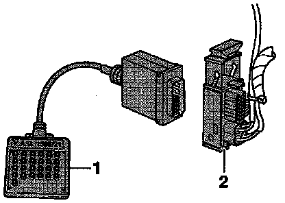

Electrical Test Instructions
Teves 20 GI ABS And ABS/EDL electrical Test
Electrical test steps are valid when:
- On Board Diagnostic (OBD) test program gives no indication of the source of the malfunction:
Work through complete electrical test.
- On Board Diagnostic (OBD) provides direct indication of the source of the malfunction:
Only carry out the test steps recommended in the Diagnostic Trouble Code (DTC) table (pin-pointed entry).
Test Requirements
- Fuses -S4-, -S16- and -S20- OK
- Fuses 1 and 2 for control module - ABS -S123- and -S124- OK (remove fuses from fuse holder to check).
- Ignition and electrical consumers switched-off before beginning test (headlights, lighting, fan, etc.).
Test Box Connecting:

- Disconnect multi-pin harness connector from ABS control module -J104- and connect test box tool No. VAG 1598/21 (1), or equivalent, to harness connector (2).
NOTE: The specifications listed in the electrical test table are matched to the specified multimeter (Fluke 83 or equivalent) and are not necessarily valid for other test equipment.
Test Equipment And Aids Required:
- Test box tool No. VAG 1598/21, or equivalent.
- Connector test kit tool No. VW 1594, or equivalent.
- Multimeter (Fluke 83 or equivalent).
Notes On Electrical Test Table
- The socket number designations on the VAG 1598 test box are identical to the terminal designations on the ABS control module -J104-.
- If the measured values deviate from the specifications, repair the malfunction.
- Conduct continuity checks with test kit (used for bridging terminals/sockets).
- If the measured values deviate only slightly from the specifications, clean sockets and connectors for tester and adapter cables (with contact spray G 000 700 04, or equivalent) and repeat the test before replacing components, check wiring and connections and also, particularly for specifications of less than 10 ohms, repeat the resistance test on the component.